Master Scuba
Master Scuba
Master Scuba
Master Scuba

Gili Air
Explore our official PADI courses, guided dives, and private experiences around the Gili Islands.
Your First Breath Underwater – Discover a Whole New World.
Have you ever wondered what it feels like to breathe underwater? The PADI Discover Scuba Diving program is an introductory experience for people who want to try scuba diving without committing to a full certification course. A qualified PADI Professional explains the basic principles, helps you become familiar with the equipment, and directly supervises your underwater experience.
What you will experience
Course information
Loved Your First Dive? Keep Exploring!
After completing your initial Discover Scuba Dive, you can add an extra guided open-water dive to explore another stunning Gili Islands reef site under the direct supervision of your PADI Instructor.
Big Adventures for Little Ocean Explorers!
The PADI Bubblemaker program introduces children to the fun of scuba diving in a controlled, enjoyable environment. Children learn how scuba equipment works and experience breathing underwater under the direct supervision of a qualified PADI Professional.
What children will experience
Course information
Take Your First Step Towards Becoming a Certified Scuba Diver.
The PADI Scuba Diver course is designed for people who want a recognized entry-level certification but have limited time. It covers essential diving knowledge and skills and qualifies graduates to dive under the direct supervision of a PADI Divemaster or Instructor, within the limits of their certification.
What you will learn
Course information
Become a Certified Diver. Explore the Ocean. Discover Freedom Underwater.
The PADI Open Water Diver course is the world’s best-known entry-level scuba certification. It teaches beginners the knowledge and practical skills needed to dive with a buddy, without direct professional supervision, within the limits of their training and certification.
Your training journey
Course information
Take Your Diving Skills to the Next Level.
The PADI Advanced Open Water Diver course helps certified divers build experience, improve confidence, and explore different types of diving. It is not simply about going deeper: it is an opportunity to practice new skills and broaden your underwater experience with an instructor.
What you will experience
Course information
Become a More Confident Diver. Learn to Help Others.
The PADI Rescue Diver course develops a diver’s awareness, confidence, and ability to help prevent and manage diving problems. Students learn to recognize stress, assist other divers, and respond to a range of emergency situations through knowledge development, rescue exercises, and realistic scenarios.
What you will learn
Course information
Turn Your Passion for Diving into a Professional Career.
The PADI Divemaster course is the first professional-level certification in the PADI recreational diving system. It is designed for experienced divers who want to develop leadership, assist with diver training, and supervise certain recreational diving activities within PADI standards and local regulations.
What you will develop
Course information
Explore the Vibrant Reefs of the Gilis.
Already certified? Join our experienced PADI Divemasters for unforgettable guided boat dives across iconic dive sites surrounding the three Gili Islands.
Experience the Reef After Sunset.
Watch the underwater world transform as nocturnal creatures come out to hunt. On a guided Night Dive around the Gili Islands, you can spot sleeping sea turtles, Spanish dancers, cuttlefish, and glowing bioluminescence.
Try a New Diving Specialty & Gain Credit.
Want to dive deeper (up to 30m) or try Underwater Navigation without committing to the full 2-day Advanced course? Complete a single PADI Adventure Dive with an instructor.
Refresh Your Skills. Rebuild Your Confidence. Get Back Underwater.
Have you been away from scuba diving for a while? The Scuba Tune-Up / Refresher program helps certified divers review essential knowledge and practical skills before returning to the ocean.
What you can refresh
PADI Enriched Air (Nitrox) Diver Course – Extend Your Bottom Time.
The PADI Enriched Air Diver course is PADI’s most popular specialty scuba course. Diving with enriched air nitrox gives you more no-decompression time, especially on repetitive scuba dives.
Ultimate Combo Package: PADI Advanced Open Water + Enriched Air Nitrox.
Combine two of the most valuable PADI certifications into one seamless training package and save! Expand your depth limit to 30 meters while enjoying extended bottom times with Enriched Air Nitrox.
Exclusive Private Boat & Personal Dive Guide.
For divers seeking an exclusive, flexible, and personalized experience, our Private Boat Dive package is tailored entirely to your preferences.
Snorkeling Around Gili Air.
Not ready to scuba dive or traveling with non-diving friends? Join our boat or rent high-quality snorkeling gear (mask, snorkel, fins, and life jacket if needed) to swim alongside Gili Air's famous sea turtles and colorful shallow coral gardens.
Underwater Camera Rental – Capture Your Memories!
Take home high-resolution photos and videos of your dives with sea turtles, sharks, and coral reefs. Rent our underwater camera with deep-water housing for your dive or course.
Looking for a more personalized adventure? Book a private dive guide or instructor and explore the underwater world at your own pace, tailored exactly to your needs.
Private Dive Boat • Private DM / Instructor
MASTER SCUBA CENTER is based on Gili Air Island, with diving activities around Gili Air, Gili Trawangan, and Gili Meno. The three islands offer a variety of tropical underwater environments.
Located in the heart of the idyllic Gili Islands, Master Scuba Diver Resort on Gili Air offers world-class diving experiences for adventurers of all levels. Our dive sites are home to vibrant coral gardens, abundant marine life, and most famously—sea turtles. Dive alongside these gentle giants in their natural habitat, a daily highlight for many of our guests. With experienced PADI instructors, small group sizes, and a strong focus on safety and environmental awareness, we provide personalized dive adventures that are as enriching as they are unforgettable.